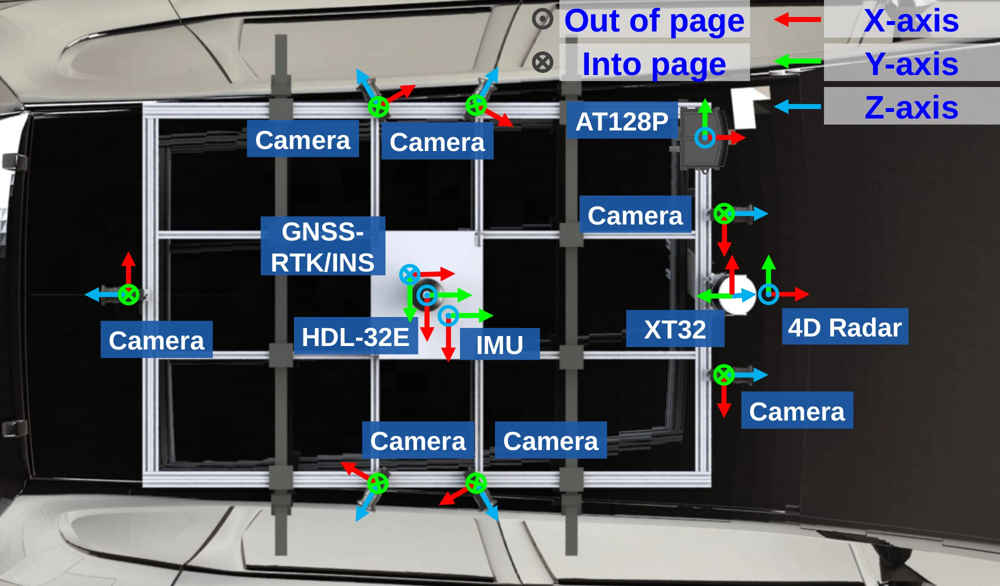

Calibration

Coordinate frames
hdl32 is the onboard reference frame. Camera frames use the optical convention: x points right, y points down and z points forward.
p_target = R · p_source + t
A_to_B.yaml maps points from A to B. Rotation is a row-major 3 × 3 array; Translation is in metres. Files using matrix store a 4 × 4 homogeneous transform.
Camera-IMU/imu_to_camN.yaml maps IMU → camera. In camera_camera.yaml, cam0_from_cam1 maps cam1 → cam0.
The original files use ap128p for the AT128P. Camera frame IDs and topics are listed below.
Parameters
Onboard source package: august_2026_reviewed_candidate. The supplied files retain their original calibration_accepted: false status.
Camera intrinsics
| Camera | Image topic | Download |
|---|---|---|
image_0Frame: cam0Right-back | /hikcamera/image_0/compressed | YAML ↓ |
image_1Frame: cam1Front-right | /hikcamera/image_1/compressed | YAML ↓ |
image_2Frame: cam2Front-left | /hikcamera/image_2/compressed | YAML ↓ |
image_3Frame: cam3Left-front | /hikcamera/image_3/compressed | YAML ↓ |
image_4Frame: cam4Right-front | /hikcamera/image_4/compressed | YAML ↓ |
image_5Frame: cam5Left-back | /hikcamera/image_5/compressed | YAML ↓ |
image_6Frame: cam6Rear | /hikcamera/image_6/compressed | YAML ↓ |
Pinhole model, 2200 × 1740 pixels. cameraMatrix contains K; distCoeffs contains [k1, k2, p1, p2].
Extrinsics
Dataset-specific time offsets are retained for aug07 and aug13, in seconds. t_IMU = t_sensor + offset. Apply the matching offset once.
Roadside LiDAR
Each T_Rj maps a roadside sensor frame to its site's East–North–Up (ENU) frame: p_ENU = R_ENU_sensor · p_R + t_ENU. Translations are in metres; quaternions use [w, x, y, z]. HKSTP and East Kowloon each use the WGS84 origin stored in enu_anchor_lla_wgs84.
| Site | Sensor frames → site ENU | Download |
|---|---|---|
| Hong Kong Science Park | hkstp_2a, hkstp_2b → hkstp ENU | ZIP ↓ · YAML · CSV |
| East Kowloon | ekeo_1, ekeo_2, ekeo_3, ekeo_4, ekeo_5, ekeo_6 → ekeo ENU | ZIP ↓ · YAML · CSV |
The coordinate workbook lists lamppost locations; sensor origins and orientations are given by the extrinsic files. Original quality fields are retained in each file.